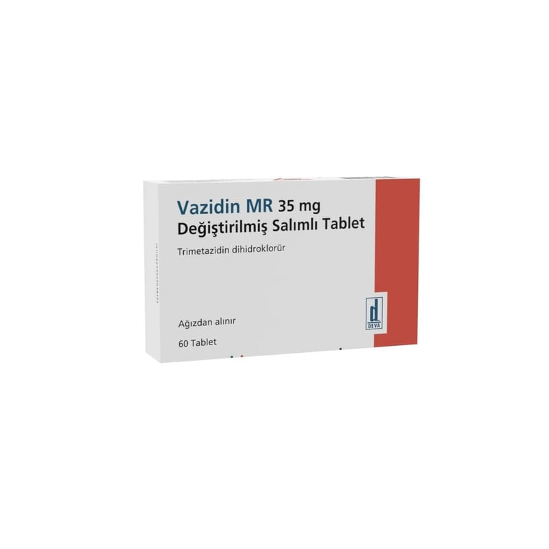

Vazidin MR 35 mg Değiştirilmiş Salımlı Tablet, 60 Adet

Ne için kullanılır
KT · Bölüm 1 VAZİDİN MR 35 mg değiştirilmiş salımlı tablet, pembe renkli, yuvarlak, bikonveks, bir yüzünde “DEVA” diğer yüzünde “35” baskılı film kaplı tablettir ve 60 tabletten oluşan blister ambalajda bulunmaktadır. VAZİDİN MR, yetişkin hastalarda anjina pektoris (koroner hastalığının sebep olduğu göğüs ağrısı) tedavisinde diğer ilaçlarla birlikte kullanılmaktadır.